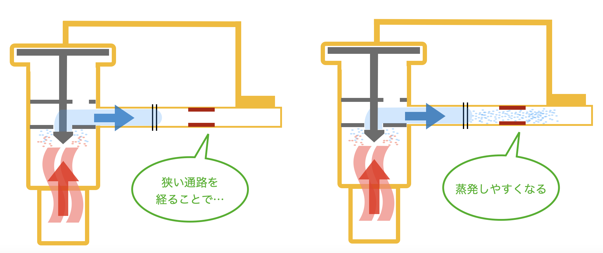
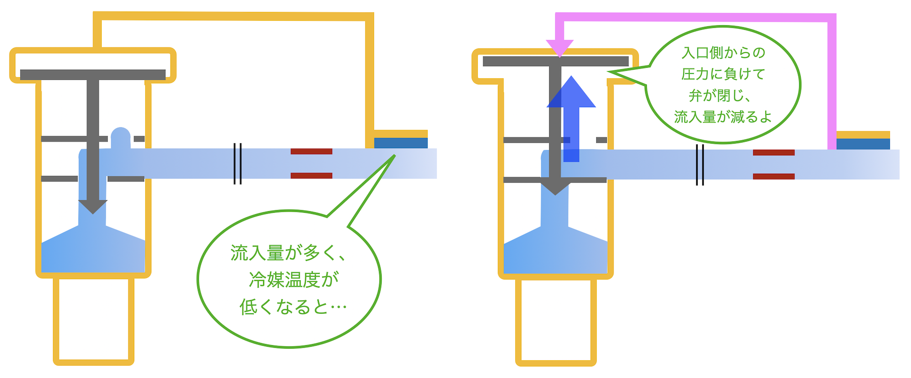
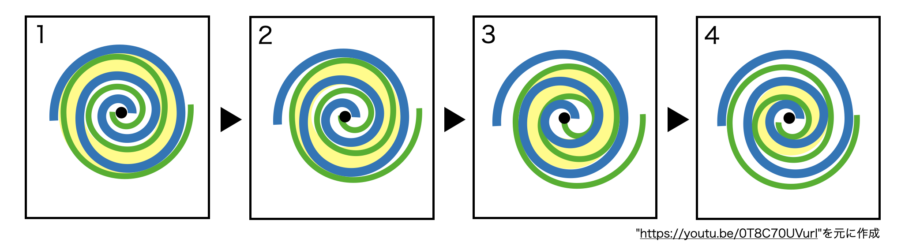

ここからは、エアコンの部品の一部についてその仕組みを解説していきます。
Phase 4
エアコンの部品の説明
(1)膨張弁
膨張弁は室外機の前にある部品で、冷媒にかかる圧力を下げることで温度を下げ、蒸発させやすくするための装置です。
次にその仕組みについて説明していきます。まず、蒸発しやすさは圧力が関係しています。山に登った時を想像してみてください。標高が上がれば上がるほど沸点が下がるという話を聞いたことがあるでしょう。
これは標高の上昇によって気圧が低下することによるものです。冷媒にかかる圧力が下がる事で温度が低下し、空気との温度差が広がるので、空気と混ざり合った時に蒸発しやすくなります。
膨張弁ではこれを利用しています。高温高圧で送られてくる冷媒は狭い孔を通ることで 流入量が減るとともに、送り出されるスピードが速くなります。速度が速くなるとその部分の圧力が低くなります。結果低温になり蒸発しやすい状況ができるのです。

Fig.6 膨張弁の模式図
しかし、これだけでは弁である必要がありません。細いチューブを通せば良いのです。
そこで登場するのが感温筒です。
冷媒の流入量が多くなると温度が下がるため感温筒内の圧力が低下し、弁は閉じます。よって流入量は減り、温度も適正に戻ります。反対に流入量が少なくなるとは温度が上がるため、感温筒内の圧力が上昇し、弁が開きます。よって流入量は増え、温度も適正に戻ります。
これだけでは仕組みが分からないという方も多いと思います。感温筒にはガス及び液体が封入されており、これが温度の変化によって膨張・収縮することで圧力が変化します。圧力が上昇し膨張弁を押し込むと弁は開き、圧力が低下すると弁は閉じます。
これは、膨張弁の開閉が内部バネによって行われているからで、力がかかっていない時に閉まるようになっているからです。

Fig.7 感温筒の仕組み
(2)圧縮機
膨張弁の対になる部品で、圧力をかけることで冷媒の温度を上昇させ凝縮させやすくするための装置です。コンプレッサーとも呼ばれます。
凝縮とは気体から液体となる状態変化の事で、蒸発とは対になる現象です。用途に合わせて様々な形の圧縮機が存在していますが、その中で主に家庭用エアコンに使われているのは回転式と呼ばれるモーターを使うタイプのスクロール圧縮機です。名前の通り内部には金属板を巻いたようなパーツがあり、それが名前の由来となっています。

Fig.8 回転式圧縮機の模式図
ではどうやって流体を圧縮しているかについて簡単に説明しましょう。
上の図の青いパーツは固定されていて緑色のパーツは動くようになっています。
青と緑のパーツに挟まれた黄色く塗られた部分にご注目ください。まず初めに1の状態で黄色の部分に流体が流れ込んできます。2，3，4と緑色のパーツが流体とともに移動するにしたがい、だんだんと青と緑に囲まれた黄色の部分の面積が少なくなります。そして、4では元の状態の1/10以上の面積になってしまいます。
このようにして圧縮された流体は中央の部分から外へ移動し、そしてまた外部から圧縮されていない流体が流れ込んでくるという仕組みになっているわけです。
結果として圧縮された流体が高温になって外へ移動します。
ではそもそもなぜこのような面倒な仕組みを使うのでしょうか。
このようなスクロール圧縮機が採用されているのは以下のような理由があります。
まず、二つ上の図を見てもわかる通りこのスクロール圧縮機はパーツが非常に少ない、言い換えれば単純な機構をしています。単純な構造なので丈夫で長持ちし小型化しやすいなどのメリットが存在します。工業用のように高出力を必要としない家電製品の圧縮機にはぴったりです。
また、他のタイプによりも振動が少ないことも特徴の一つとして挙げられます。これにより騒音があまり出ないほか、振動による機械の故障も防止することができます。
これらの理由からエアコンにはスクロール圧縮機が採用されています。
まとめ
エアコンには膨張弁、圧縮機という部品があり、冷媒の気圧を調節することでエアコンが働くのをアシストしている。